Mesas de trabalho para rodar e organizar vários agentes (tipo a Alethe).
| Vídeo | Projeto | O que faz | Pasta de origem | |
|---|---|---|---|---|
| I Let 30 AI Agents Loose in My Repo (Gas Town) | 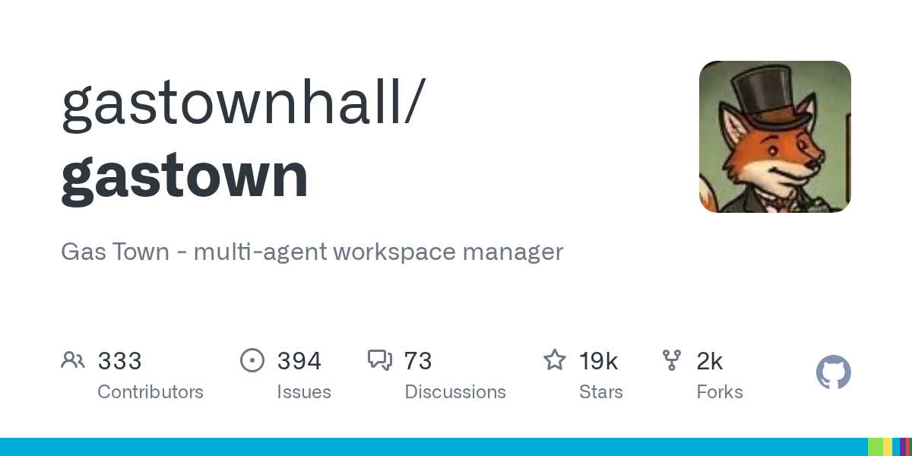 | gastownhall/gastown | 18.8k★ · gerenciador de workspace multi-agente (o mais estrelado da lista). | curado — busca na internet |
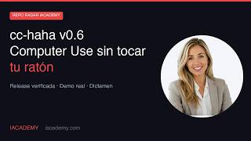 cc-haha 0.6: Computer Use sin secuestrar tu rató | 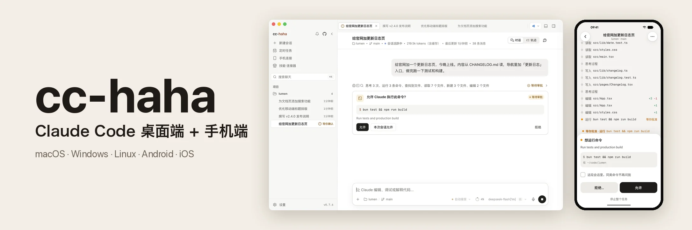 | NanmiCoder/cc-haha | 15.4k★ · mesa de trabalho desktop do Claude Code: worktrees, diff, multi-modelo. | curado — busca na internet |
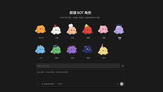 Ekko Studio v0.8.0：个人助理上线，多个 BOT 分工协作 | 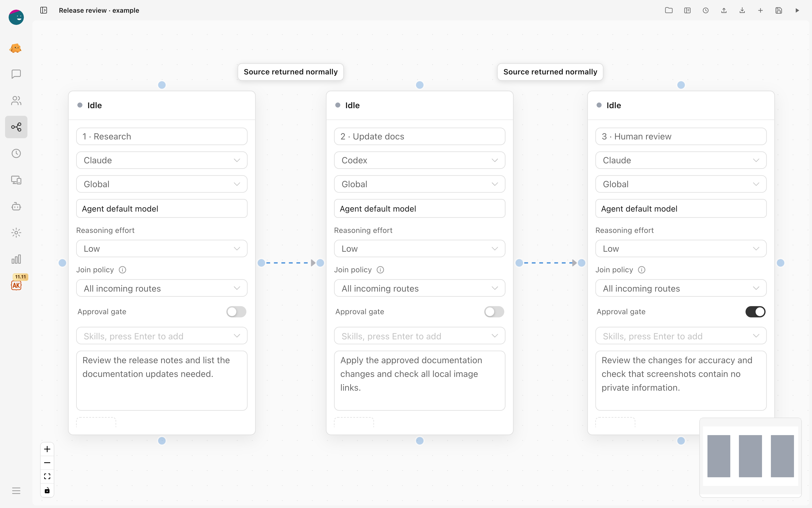 | EKKOLearnAI/ekko-studio | 11.8k★ · workspace local-first multi-agente (chat, código, fluxo visual). | curado — busca na internet |
| Como configurar o ClawX com 1 clique (GRÁTIS!) | 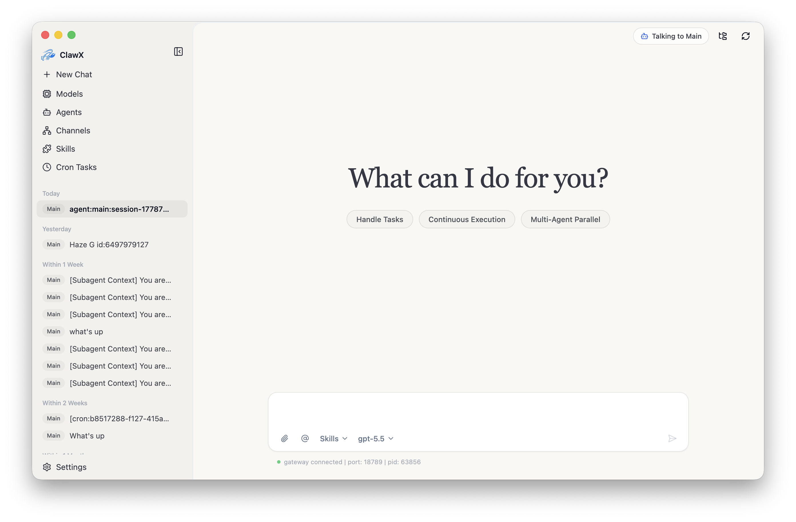 | ValueCell-ai/ClawX | 7.6k★ · app desktop com interface gráfica para agentes OpenClaw. | curado — busca na internet |
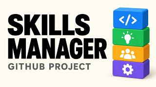 Guia de Configuração do Skills Manager no GitHub | 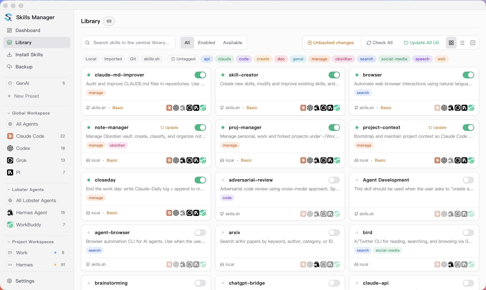 | xingkongliang/skills-manager | 7.5k★ · app para organizar/sincronizar skills entre 50+ ferramentas. | curado — busca na internet |
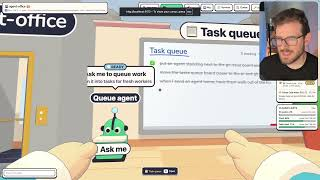 This Is the Future of Agentic Coding | 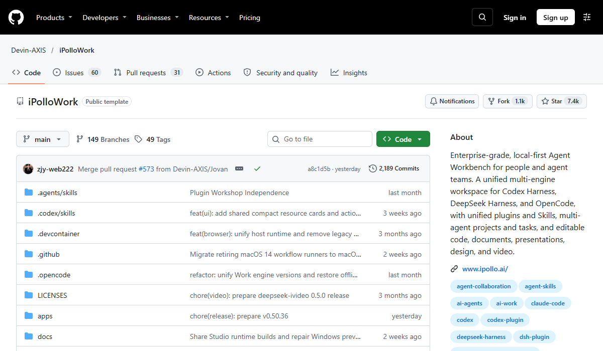 | Devin-AXIS/iPolloWork | 7.4k★ · workbench local-first para times de agentes. | curado — busca na internet |
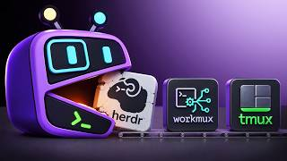 tuios8 em movimento rascunho 2 | Gaurav-Gosain/tuios | 6.5k★ · gerenciador de janelas de terminal que acompanha os agentes. | curado — busca na internet | |
| Claude Code - Tutorial Completo (para Iniciantes | 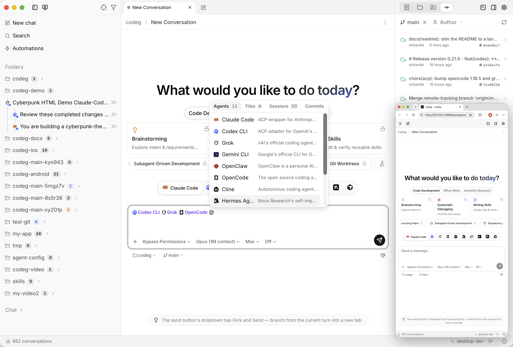 | spacering-net/codeg | 4.4k★ · workspace colaborativo (Claude, Codex, OpenCode). | curado — busca na internet |
| sem vídeo | golutra/golutra | 3.9k★ · plataforma de orquestração multi-agente. | curado — busca na internet | |
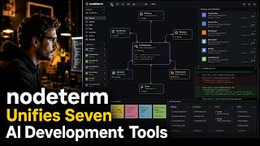 nodeterm: Uma tela para 7 ferramentas — Nunca ma | eneskirca/nodeterm | 2.5k★ · terminal com nós, tmux e sessões paralelas de agentes. | curado — busca na internet | |
| Routa - Prosessi (Video) | 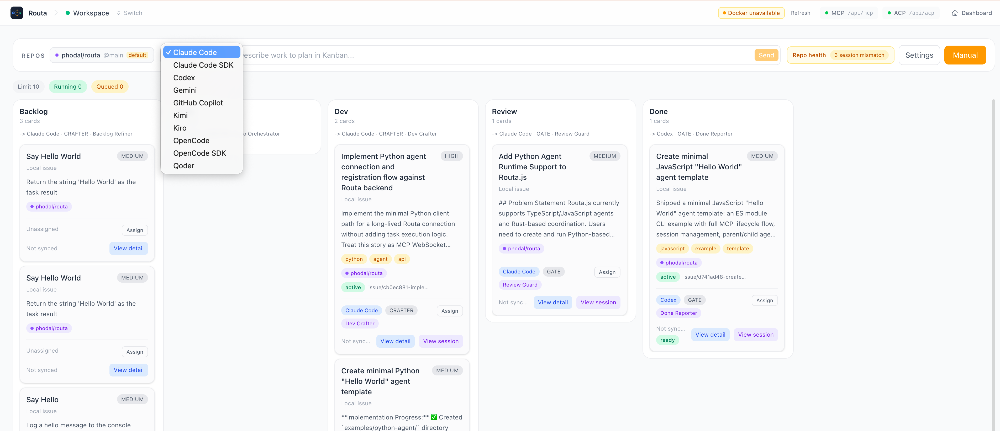 | phodal/routa | 1.8k★ · coordenação multi-agente com specs e kanban. | curado — busca na internet |
| Meldwork: AI Agents That Collaborate and Review | 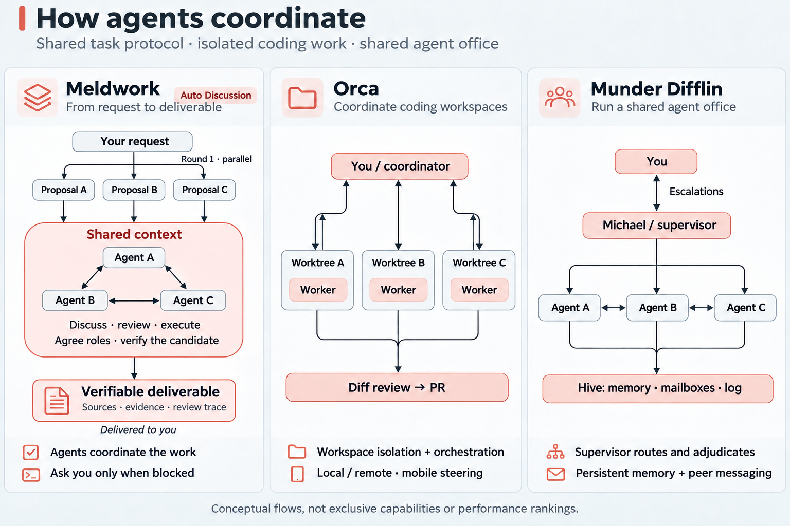 | Ryder-Sun/Meldwork | 1.6k★ · workspace local-first para colaboração entre agentes. | curado — busca na internet |
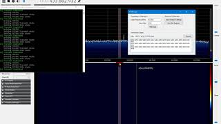 CCManager тестирование | 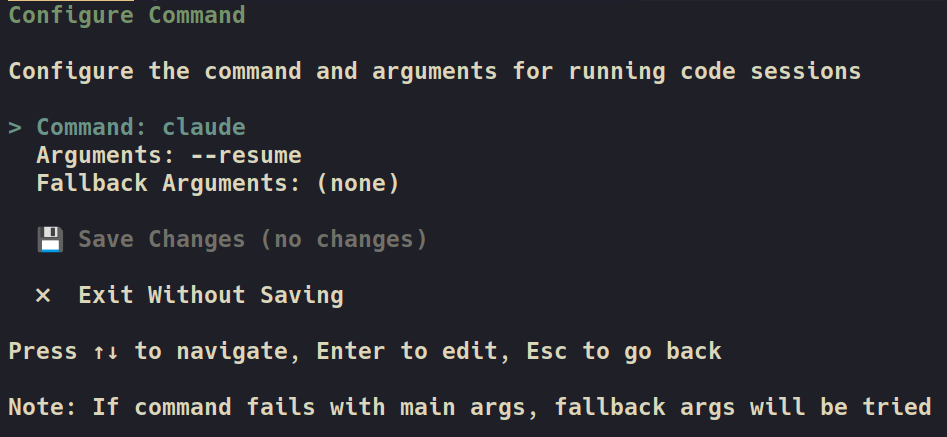 | kbwo/ccmanager | 1.3k★ · gerenciador de sessões (Claude, Gemini, Codex, Cursor). | curado — busca na internet |
| Agent Deck: every Claude Code session on your St | 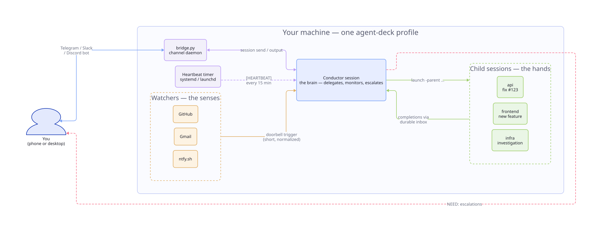 | asheshgoplani/agent-deck | 1.3k★ · TUI para gerenciar sessões de agentes. | curado — busca na internet |
| COLEIRO TUUI TUI FIBRA ÓTIMO PROFESSOR PARA SEU | 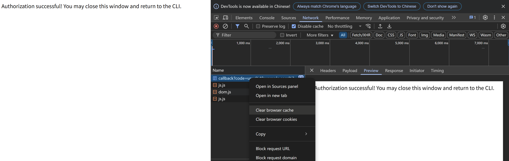 | AI-QL/tuui | 1.2k★ · cliente MCP desktop para integrar ferramentas. | curado — busca na internet |
| OpenCode: O \ | 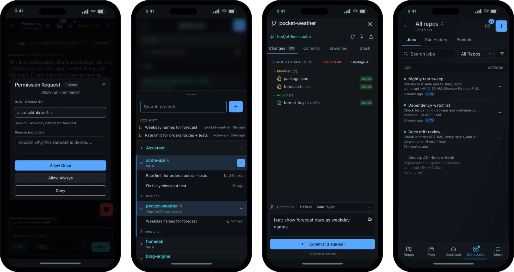 | chriswritescode-dev/opencode-manager | 1k★ · central de comando self-hosted para o OpenCode. | curado — busca na internet |
| ESSA MORENA DA PANE NO MEU SISTEMA - Grego, Paul | 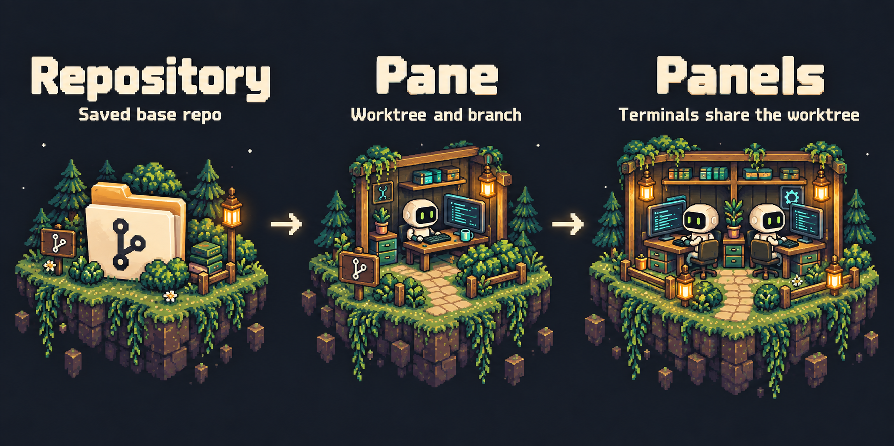 | greenfield-inc/Pane | 620★ · gerenciador de agentes CLI (qualquer SO). | curado — busca na internet |
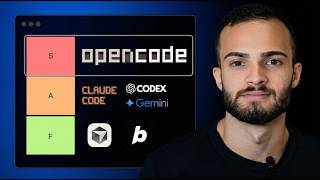 Aprenda Opencode em 15 minutos e saia na frente | 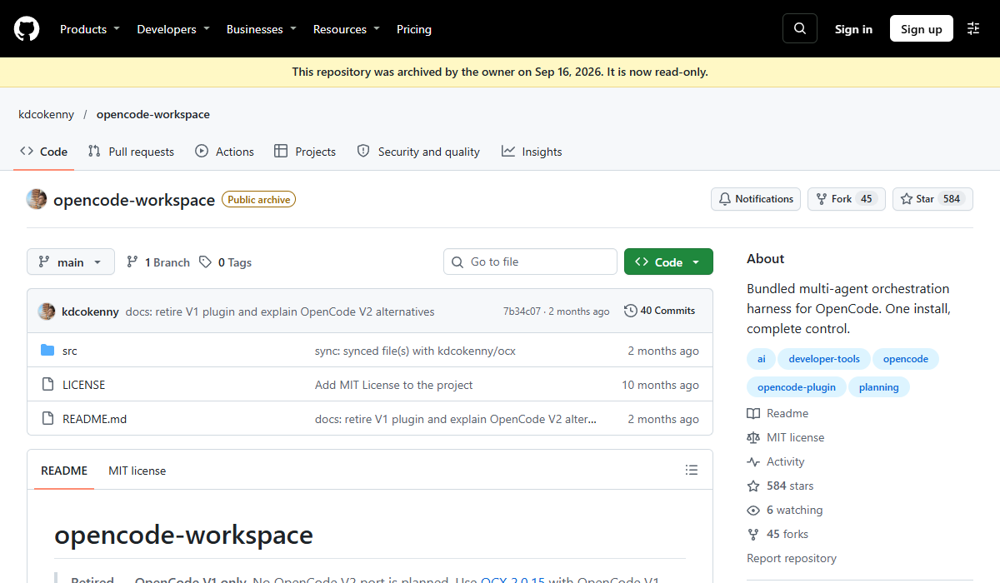 | kdcokenny/opencode-workspace | 584★ · harness pronto de multi-agente para OpenCode. | curado — busca na internet |
| Claude Code: Pare de Programar Sozinho e Crie Ag | 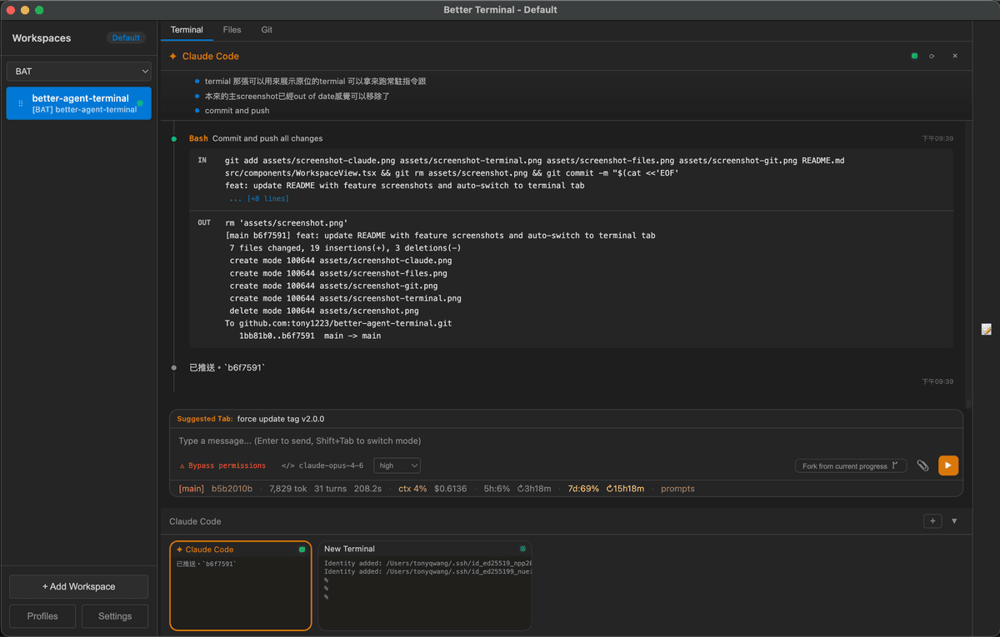 | tony1223/better-agent-terminal | 522★ · agregador de terminais multi-workspace com Claude Code. | curado — busca na internet |
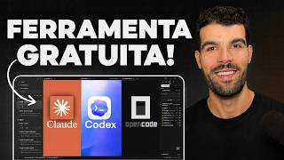 ORCA IDE: Como Operar um TIME de Agentes de IA [ | 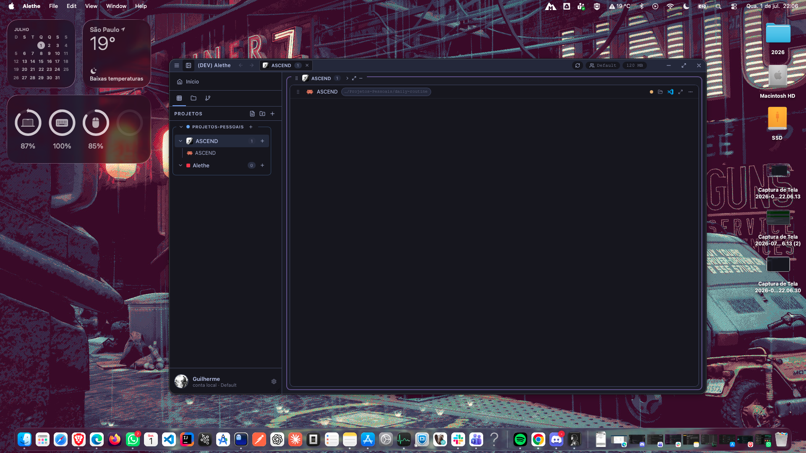 | Kc1t/alethe-agents | 1.2k★ · workspace local-first para rodar e retomar vários agentes (a sua). | PROGRAMAÇÂO IA AGENT / PLATAFORMAS DE IA / GITHUBS |